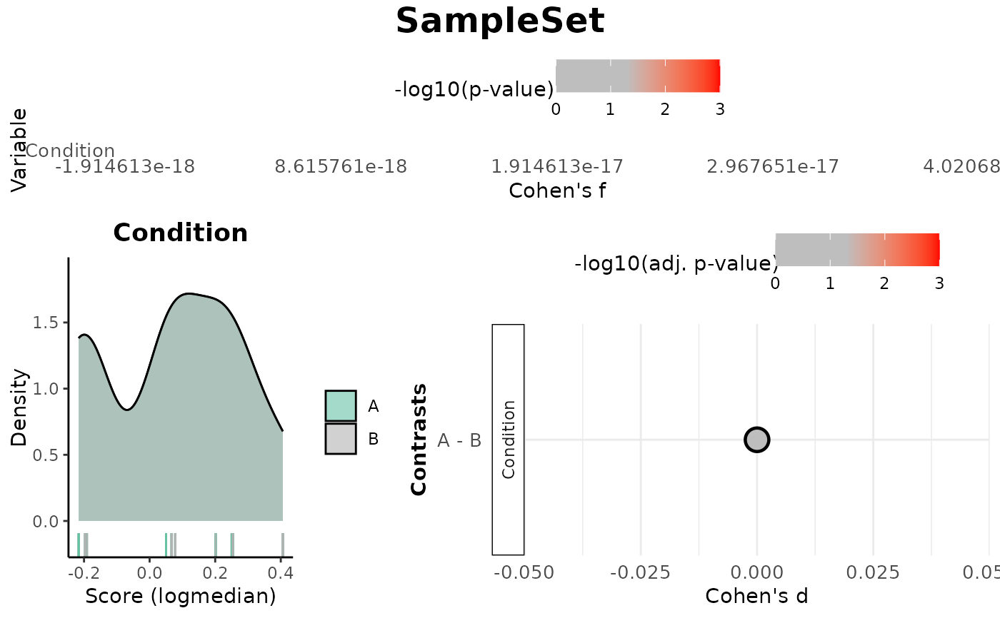
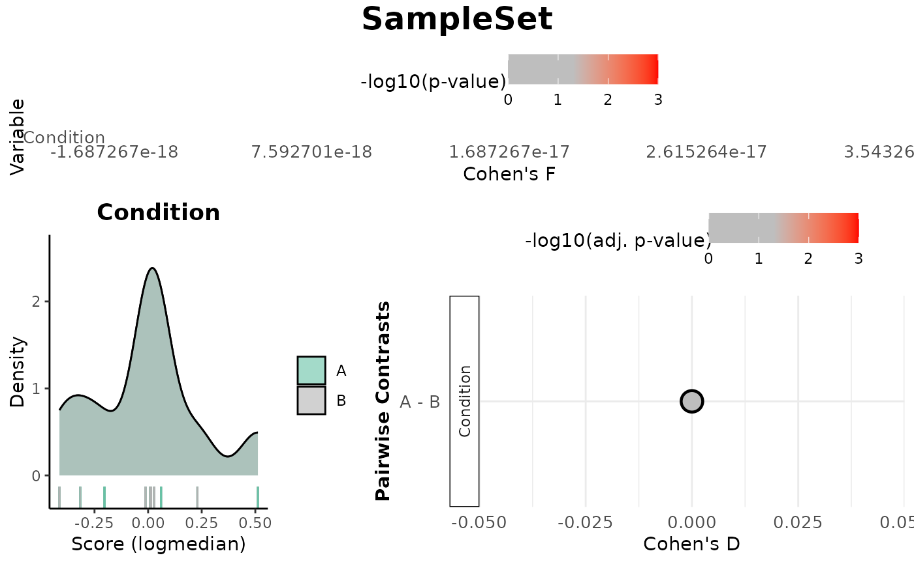

This function evaluates the association between gene expression scores and metadata variables. It uses linear modeling to get Cohen's F, and contrast-based comparisons for categorical variables to compute Cohen's D. The function generates plots summarizing the results.
Usage
Score_VariableAssociation(
data,
metadata,
cols,
method = c("logmedian", "ssGSEA", "ranking"),
gene_set,
mode = c("simple", "medium", "extensive"),
nonsignif_color = "grey",
signif_color = "red",
saturation_value = NULL,
sig_threshold = 0.05,
widthlabels = 18,
labsize = 10,
title = NULL,
titlesize = 14,
pointSize = 5,
discrete_colors = NULL,
continuous_color = "#8C6D03",
color_palette = "Set2"
)Arguments
- data
A data frame or matrix containing gene expression data.
- metadata
A data frame containing sample metadata with at least one column corresponding to the variables of interest.
- cols
A character vector specifying metadata columns to analyse.
- method
A character string specifying the scoring method (
"logmedian","ssGSEA", or"ranking").- gene_set
A named list containing one gene set for scoring.
- mode
A character string specifying the contrast generation method (
"simple","medium","extensive"). Four methods are available:ssGSEA: Uses the single-sample Gene Set Enrichment Analysis (ssGSEA) method to compute an enrichment score for each signature in each sample using an adaptation of the
gsva()function from theGSVApackage.logmedian: Computes the score as the sum of the normalized (log2-median-centered) expression values of the signature genes divided by the number of genes in the signature.
ranking: Computes gene signature scores for each sample by ranking the expression of signature genes in the dataset and normalizing the score based on the total number of genes.
- nonsignif_color
A string specifying the color for non-significant results. Default:
"grey".- signif_color
A string specifying the color for significant results. Default:
"red".- saturation_value
A numeric value for color saturation threshold. Default:
NULL(auto-determined).- sig_threshold
A numeric value specifying the significance threshold. Default:
0.05.- widthlabels
An integer controlling contrast label wrapping. Default:
18.- labsize
An integer controlling axis text size. Default:
10.- title
A string specifying the plot title. Default:
NULL.- titlesize
An integer specifying the title size. Default:
14.- pointSize
A numeric value for point size in plots. Default:
5.- discrete_colors
A named list mapping categorical variable levels to colors. Each element should be a named vector where names correspond to factor levels. Default:
NULL.- continuous_color
A string specifying the color for continuous variables. Default:
"#8C6D03".- color_palette
A string specifying the color palette for discrete variables. Default:
"Set2".
Value
A list with:
Overall: Data frame of effect sizes and p-values for each contrasted phenotypic variable.Contrasts: Data frame of Cohen’s d and adjusted p-values for contrasts between levels of categorical variables, with the resolution of contrasts determined by the mode parameter.plot: A combined visualization with three main panels: (1) lollipop plots of Cohen’s f for each variable of interest, (2) distribution plots of the score by variable (density or scatter depending on variable type), and (3, if applicable) lollipop plots of Cohen’s d for contrasts in categorical variables.plot_contrasts: Lollipop plots of Cohen’s d effect sizes for contrasts between levels of non numerical variables (if applicable), colored by adjusted p-value (BH).plot_overall: Lollipop plot showing Cohen’s f effect sizes for each variable, colored by p-value.plot_distributions: List of density or scatter plots of the score across variable levels, depending on variable type.
Examples
data <- as.data.frame(abs(matrix(rnorm(1000), ncol = 10)))
rownames(data) <- paste0("Gene", 1:100) # Name columns as Gene1, Gene2, ..., Gene10
colnames(data) <- paste0("Sample", 1:10) # Name rows as Sample1, Sample2, ..., Sample100
metadata <- data.frame(
sample = colnames(data), # Sample ID matches the rownames of the data
Condition = rep(c("A", "B"), each = 50) # Two conditions (A and B)
)
gene_set <- list(SampleSet = c("Gene1", "Gene2", "Gene3"))
results <- Score_VariableAssociation(data, metadata, cols = "Condition", gene_set = gene_set)
#> Considering unidirectional gene signature mode for signature SampleSet
#> Warning: no non-missing arguments to min; returning Inf

print(results$plot)
